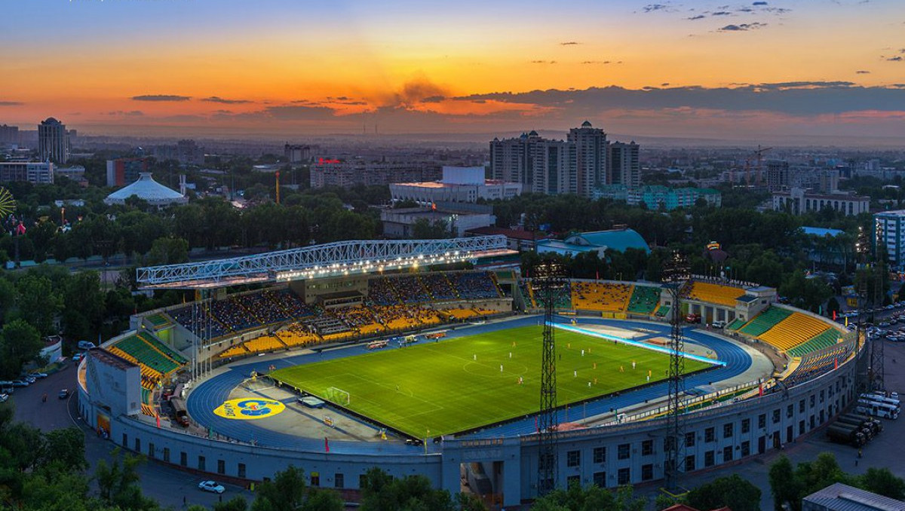

FC Kairat
The pride of Kazakhstan
History
FC Kairat is one of the oldest and most famous football clubs in Kazakhstan. Founded in 1954, the club played in the Soviet Top League and became the main representative of Kazakhstan in Soviet football. After independence, Kairat continued to dominate in the Kazakhstan Premier League, winning many titles and cups.
Achievements
- Kazakhstan Premier League Champions — multiple times
- Kazakhstan Cup Winners — record holder
- Kazakhstan Super Cup Winners
- Participant in UEFA competitions
Legendary Players
Over the years, FC Kairat has produced and hosted many talented players who became symbols of Kazakh football. The club’s academy continues to train new generations of footballers who represent Kazakhstan internationally.
Home Stadium
Kairat plays at the Central Stadium in Almaty, which has been the heart of Kazakh football for decades. It gathers thousands of fans every matchday.
